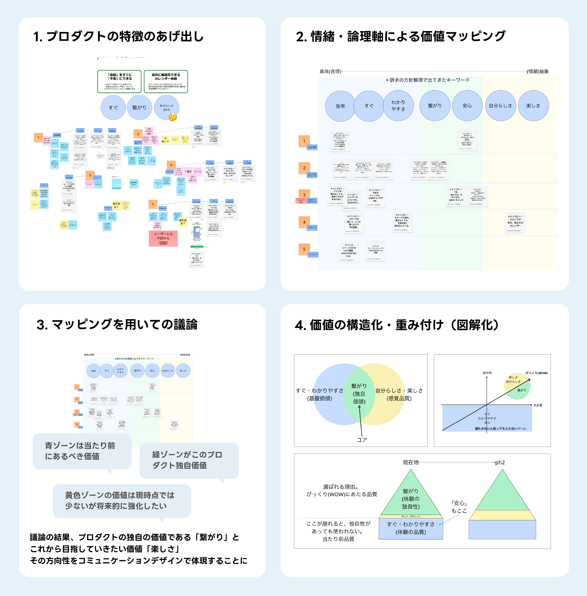
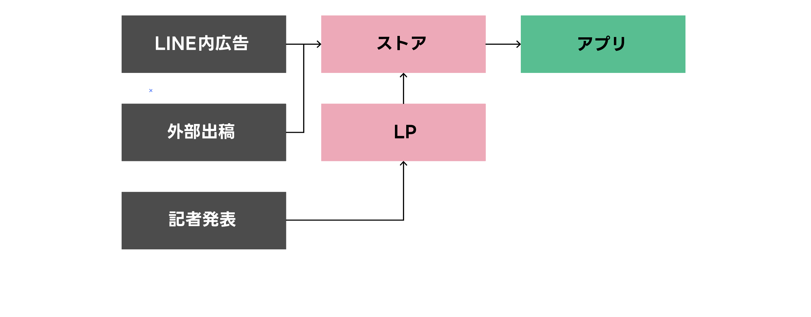
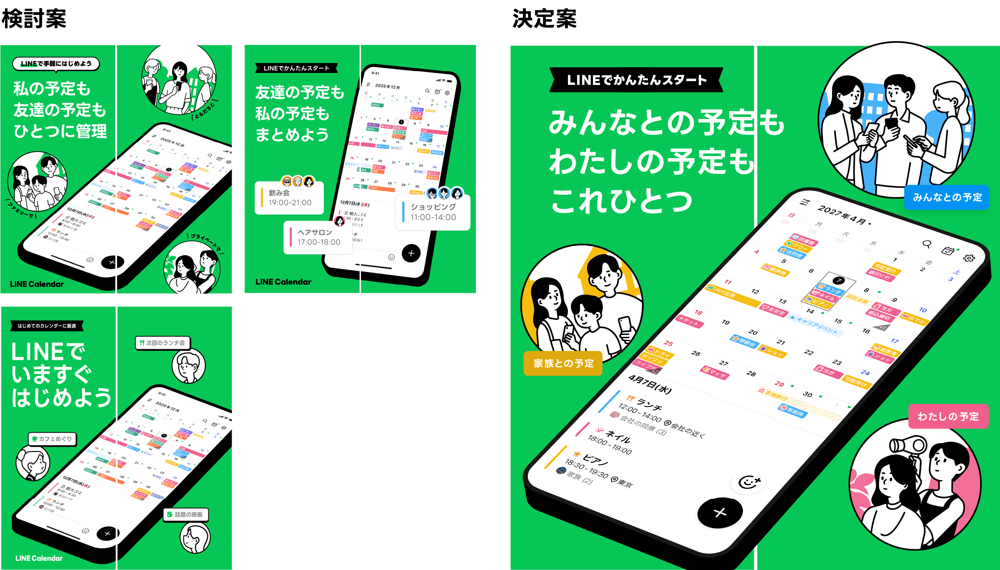
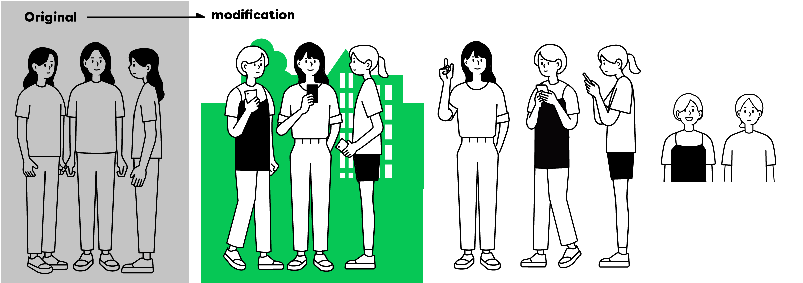

【前編】BXデザイン立ち上げの苦しみ〜「指針なき混沌」を乗り越えた話〜LINEカレンダーアプリのBX設計の舞台裏〜
始まり
「来期からカレンダー行ってね。チームにコミュニケーションデザインが強い人がいないんだよね」
3月、部長からその言葉を告げられたとき、私の頭の中にはさまざまな思いが駆け巡っていた。当時、LINEカレンダーアプリの開発はまさに佳境を迎え、来期リリースに向けた重要な局面を迎えていたのだ。
そもそも、LINEヤフーのカレンダープロダクトには前身となる「Yahoo!カレンダー」が存在した。経営判断によって一度はサービスの終了が決定したものの、終了告知を出した途端、ユーザーから「終わらせないでほしい」という数万件にのぼる悲痛な声が寄せられた。その熱量と期待を真正面から受け止め、「LINEカレンダーアプリ」として再び立ち上がることになった——いわば異例の経緯を持つプロダクトである。
個人の予定データという機微な情報を蓄積する領域でありながら、AIによる技術進化の波を受け、いかにデータの利活用や行動履歴の進化を図り、新たな勝負に出ていくか。それは会員サービスユニットのなかでも、期待値の高い案件だった。
コミュニケーションデザイナーとしてこのプロジェクトへのアサインを言い渡されたということは、すなわち、デザインの議論がプロジェクトチームにとどまらず、執行役員や事業責任者が関わる意思決定のテーブルに置かれることを意味していた。
さらに、LINEアプリ（コミュニケーションアプリ）のメイン導線内やミニアプリとしても、すでに「カレンダー機能」は存在している。その中で独立したアプリとしてどう棲み分けるのか。さらに、LINEブランドである以上、韓国のデザイン管掌組織（MUX）との調整も発生し、プロモーションの合意形成には執行役員だけでなく周囲の多様なステークホルダーが複雑に関わってくる。
「こんな複雑なステークホルダー構造のプロダクトのBX、完遂できるだろうか……？」さまざまな不安が入り交じる中でのスタートだった。
「指針」なきゼロからのコンセプトワーク
当然ながら、コミュニケーションデザインの土台は一切存在しなかった。手元にあったのは、プロダクトオーナー（PO）が執行役員にプロダクトの企画をプレゼンしたときのパワーポイント資料のみ。何をもってこのプロダクトの提供価値とするのか、どのようなブランドの方向性を目指すべきなのかも未定義の状態だった。
プロダクト自体は、一見すると非常にシンプルなカレンダーだ。「ワクワクする楽しさ」といった情緒的な価値を前面に押し出すべきか、「LINEと連携できて共有に便利」という機能的価値を訴求すべきか、その方針すら定まっていない。
ターゲットとして設定されたのは「予定を立てる幹事ポジションの20〜30代の女性」。しかし、彼女たちが巻き込んでいく生活圏の人物を含めれば、その影響範囲はさらに広がる。アプリを率先して使ってほしいのはコアな彼女たちだが、そこから友達や家族、恋人へとどんどん輪を広げていってほしい。そのため、デザインが最終的に見据えるべきターゲット像は「LINEでつながる幅広い年齢層の男女」に設定された。
POや開発チームに「プロダクトの推しポイント」を確認すると、次々と多様な機能が挙がってきた。
- 「共有予定の作成が圧倒的に便利」
- 「様々な通知があり、予定を見逃しにくい」
- 「スタンプが使えて予定が視認しやすい」
- 「2ペインビューが使いやすい」
しかし、私はそのたびに心の中で疑問を抱いた。
——「それはTimeTreeと一体何が違うのか？」
——「Googleカレンダーで十分に満たせるのではないか？」
——「ジョルテやライフベアでもそれは叶うはずだ。『UIが使いやすい』というのも作り手側の主観に過ぎないのではないか？」
LINEだからこその尖った価値。それは、「LINEの友だちとダイレクトに繋がっている」という一点に他ならない。アプリにログインしていれば、面倒な手続きを踏むことなく、LINEの友だちとの予定がかんたんに作成でき、相手にも即座に通知が届き、参加・不参加の返信が受け取れるという圧倒的な利便性。そのうえで、家族、友達、仕事仲間といった様々な生活圏のグループが、プロダクト上のUIで直感的に識別できるという点にある。その強固な土台の上に初めて、友だちと予定を共有する楽しさや、スタンプによる装飾、自分らしさを表現する「きせかえ」といった情緒的な価値が乗ってくる。
機能的な優位性は、あくまでそれらを支える「当たり前の土台」に過ぎない。提供価値の構造を視覚化し、チーム全体で徹底的なすり合わせを行うことで、これから構築すべきコミュニケーションデザインのトーンの塩梅を明確に定義していった。提供価値に明確な優先順位をつけ、プロダクトチームのメンバーと共に、訴求すべきライティングを一つひとつ丁寧に言語化・落とし込んでいったのだった。

発散・マッピング ➔ 合意形成 ➔ 価値の構造化・重み付け
役割の境界線を越えて——ストアデザインとBXの主導権を引き寄せる
執行役員をはじめとするステークホルダーに対し、言葉だけでデザインの定義や目指すべき方向を伝えても、なかなか真意は伝わらない。「目に見える形」に落とし込まなければ、具体的な意見やフィードバックを引き出すことはできないのだ。だからこそ、形にしなければならなかった。 まず最初に定義することになったのが、訴求フローの到達点であり、アプリダウンロードの成果を大きく左右する「ストア」のデザインだ。数枚のパネルでプロダクトの価値を表現しなければならない。
しかし、そこには「役割不明瞭」といったハードルがあった。
当時、このストアデザインはプロダクトデザイナーが進めていた。私はデザイン部長から「コミュニケーションデザインを担当してほしい」とアサインされてプロジェクトに加わったものの、現場レベルでの事前の業務切り分けやアサイン調整は整っていなかった。現場の担当者からすれば、「突然やってきたコミュニケーションデザイナーが何をしようとしているのか」「部長からどんな期待を背負ってここにいるのか」すら分からない状態だったのだ。
そんな中、プロダクトデザイナーが、まだコンセプトも訴求の土台も定まっていない真っ白な状態で、独自の訴求文言やデザインパネルを作っているのを目撃した。正直、どう関わるべきか困惑した。
まだデザインの正解の定義すらない状態であり、カレンダーチームでは「BX（ブランドエクスペリエンス）」という概念自体も浸透していない。共通のコミュニケーションの土台やコンセプトが未定義のまま、至るところでバラバラな表現が一人歩きしてしまえば、ブランド体験が完全に崩壊してしまう——強い危機感を覚えた。
私はプロダクトデザイナーに対して、アプローチを試みた。
「コンセプトやコアバリューなどの軸が未定義の状態では、表現の正解がありませんよね。POやステークホルダーが頭の中で描いているイメージともズレてしまうかもしれません。だから、まずは全員の共通言語となる『コンセプトの土台』を一緒に作りませんか？」
そこから色やフォント、イラストの使い方、訴求の文体といったトーンが自然と生まれてくるはずだと説明し、まずはコンセプトワークを一緒に固める方向へと促した。そのうえで、私自身も並行して手を動かし、ビジュアルへと具現化していった。
こうして、曖昧だった役割の境界線を越え、ストアデザインの起点やコミュニケーションデザインの主導権を、自然に自分の役割へと引き寄せたのだ。
体験の終着点としてのストアデザイン
認知からダウンロードに至るまでの最終地点となるストア。そこでは、LINEらしさが最も伝わるブランドカラーを基礎に据えた。
主要ターゲットである30代の女性像を中心に据えつつも、家族、仕事仲間、自分ひとりの予定など、ライフスタイルにまつわるシーンをイラストで描き起こし、プロダクトの根幹にある「つながり」のメタファーである「円」をデザイン全体に配した。
さらに、UI上にある「予定カラー」と「予定のシーン」を色で巧みに紐づけたことも大きなポイントだ。プロダクト内の体験とストアのビジュアルをシームレスにリンクさせ、ユーザーの印象に残るビジュアルデザインへと昇華させた。

検討案の段階ではイラスト(体験)とUIの繋がりが弱かった。
【ミニコラム】ライブラリに無いならば——「原作者」のテイストで、私がイラストを描く
新規立ち上げの際、表現のネックとなったのが「プロモーションやUIを彩る人物イラストレーション」の不足だった。
LINEブランドとしての厳格なVI（ビジュアル・アイデンティティ）ルールを維持する必要がある一方で、既存公式ライブラリには、カレンダー特有の利用シーンを表現できるバリエーションが足りていない。具体的には、「家族や仕事仲間といったクラスタ」や「大学生・ワーママといったターゲット属性」ごとの、予定発生シーンを表現できるアセットが存在しなかったのだ。
原作者であるイラストレーターに制作を依頼し、上がってくるのを待っている時間的余裕はない。かといって、汎用的なストック素材では『LINEカレンダー』ならではの情緒的価値や世界観が伝わらない。
——ならば、自分で描けばいい。「原作者のイラストレーターの絵柄の特徴」を観察し、自らイラストを描き起こすことにした。
LINEのVIに則した人物イラストのトーン&マナー（プロポーション、デフォルメの特徴）をインプットし、LP、動画、ストア、バナーといったマルチチャネルでの具体的なユースケースを想定。多様な人物像やシチュエーションを描き足していった。さらに原作者の監修も受け、ブランドルールからブレないイラストの精度を追求した。
こうして自ら制作したイラスト群を共通アセット化し、チームの他メンバーへ展開した。「UXの文脈をイラストでビジュアル化し、コミュニケーションデザイン全体の品質を底上げする共通アセット」として機能させたこの経験は、デザイナーとしての引き出しを広げてくれる貴重なプロセスとなった。
